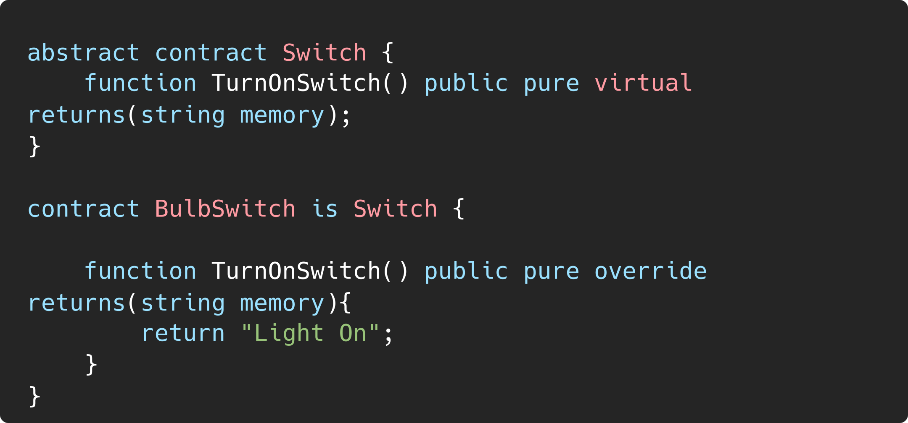
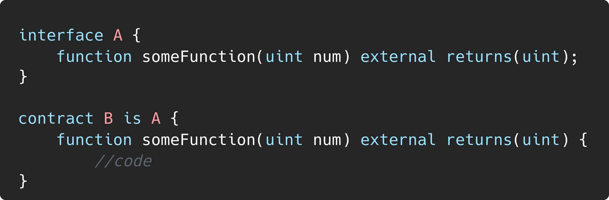
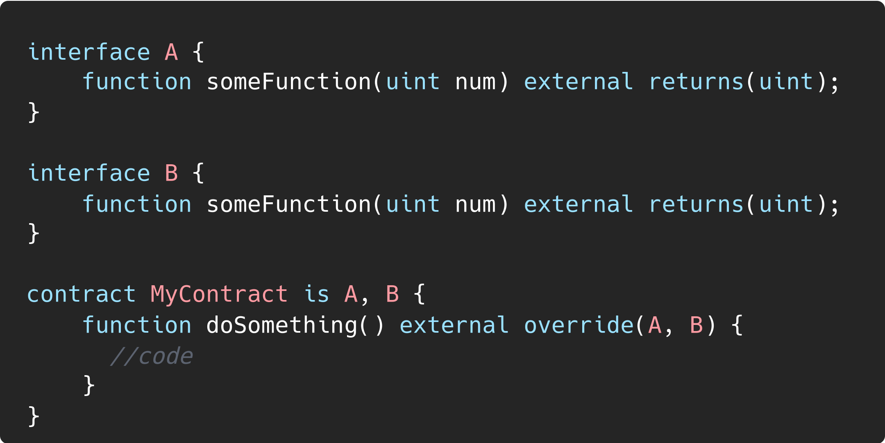
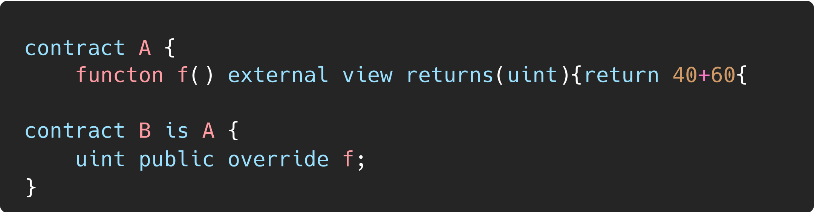
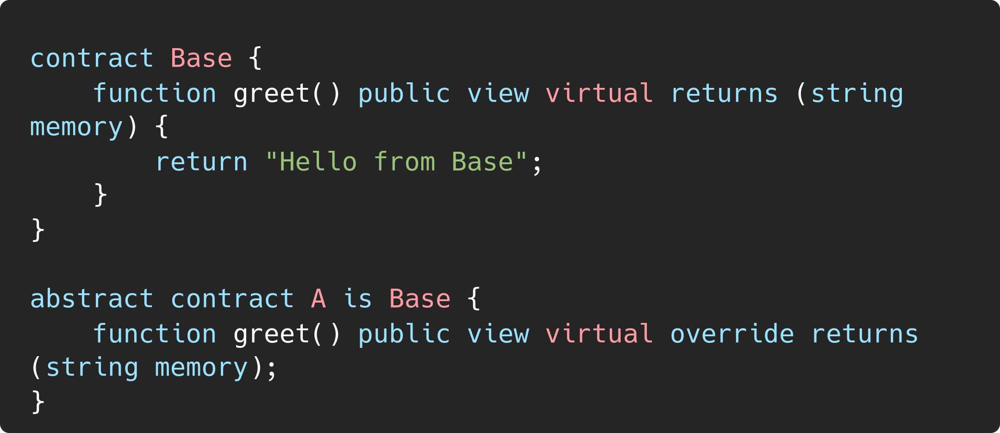

Overriding in Solidity |
|
| Organization | DeepStack Software Pvt. Ltd. |
|---|---|
| Org URL | https://www.deepstacksoft.com |
Posted on: 2024-09-18
Functions that don’t have an implementation must be marked as virtual to indicate that derived contracts are allowed to override them
Contract containing function without implementation should be marked abstract
In interfaces, you don’t need to mark functions as virtual since they are implicitly virtual, meaning they are always expected to be implemented by other contracts.
Example code

Before Solidity 0.8.8 the override keyword was required every time you overrode a function from an interface or abstract contract, from Solidity 0.8.8: If a function is defined in a single base (e.g., an interface or abstract contract), the override keyword is no longer required. However, when multiple inheritance is involved (i.e., the same function exists in multiple base contracts), the override keyword is still required to specify which base functions are being overridden.

Example code
solidity >=0.8.8, no need to mention override when overriding a function

When function is defined in multiple bases, override must be mentioned

Example code


Example code

This would throw an error